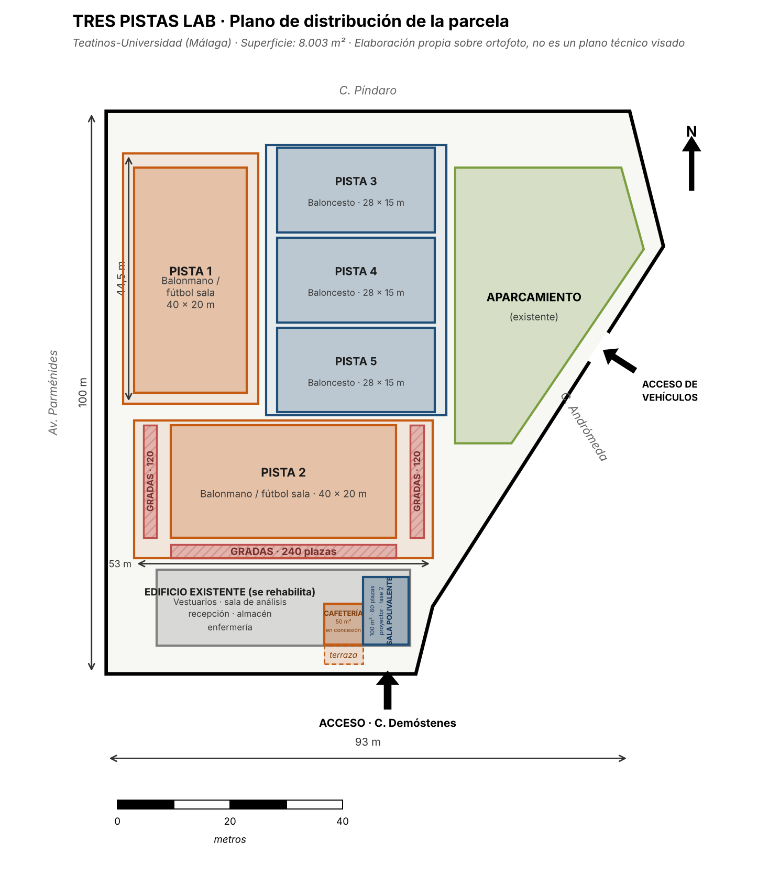
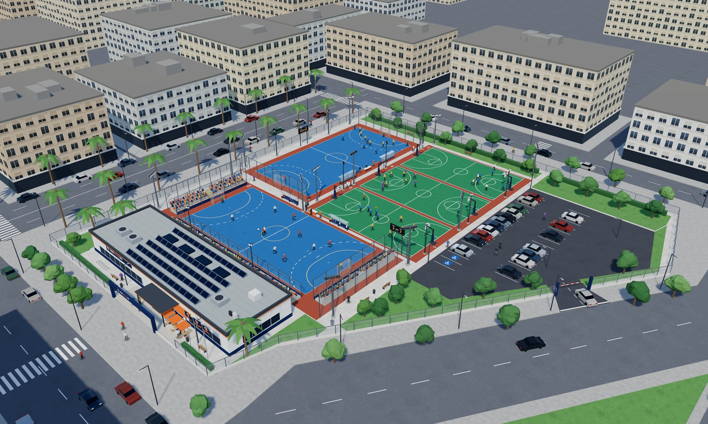
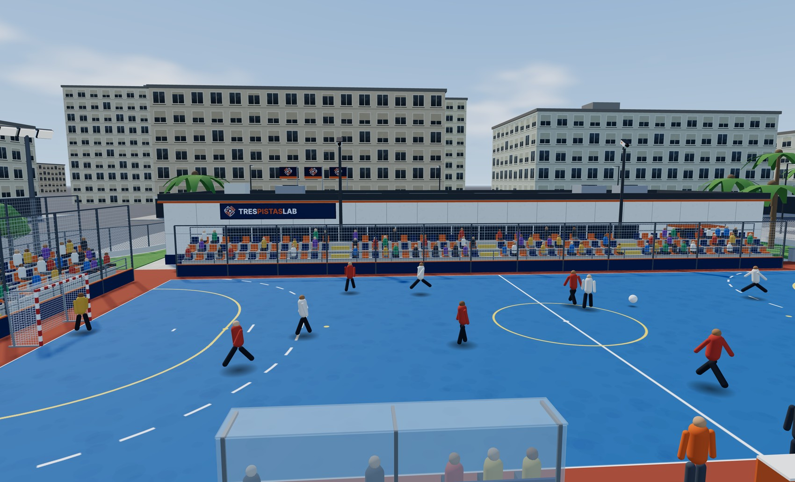
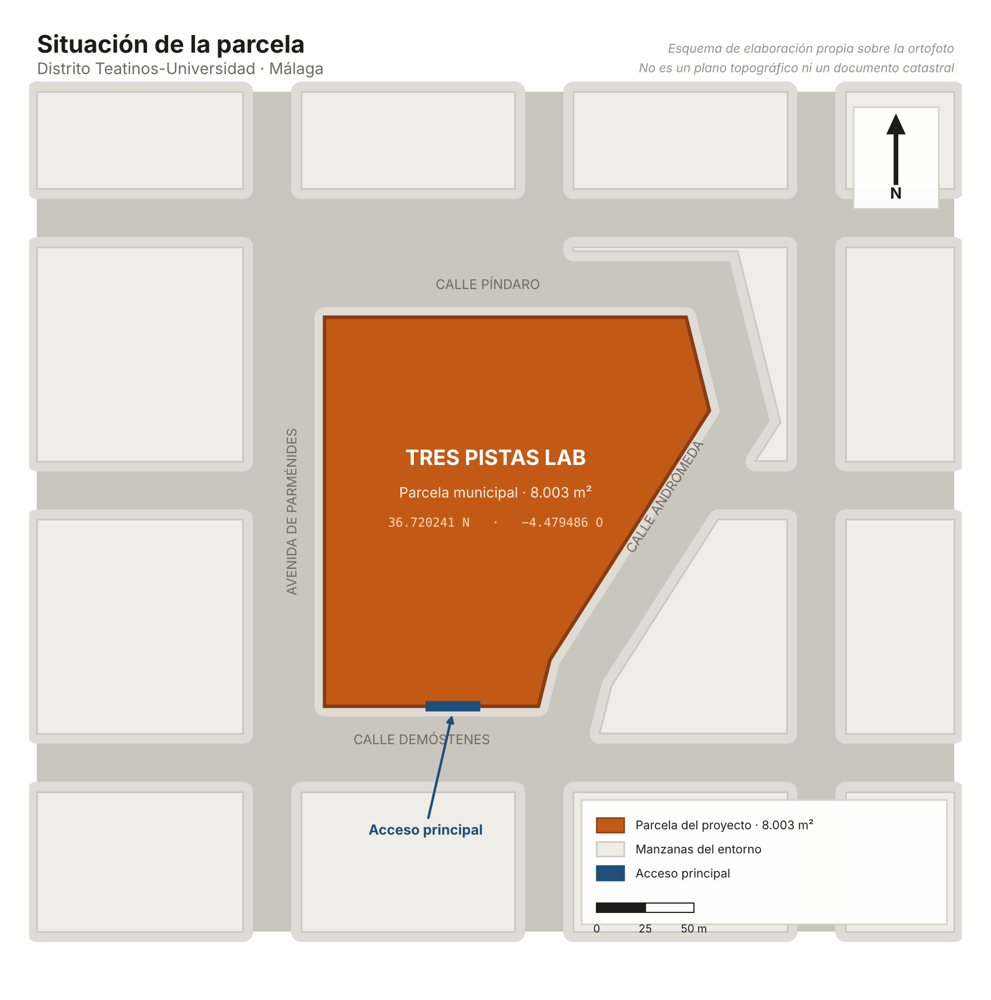

Llevo quince años en categorías de base y nunca había podido sentarme con un chaval a enseñarle su propio error el martes siguiente. Antes grababa con el móvil desde la grada y el vídeo se quedaba en el teléfono. Aquí llegas el jueves y ya tienes los cortes hechos y el informe escrito. Para un club de cantera esto no existía.
Teatinos · Málaga
El vídeo de vuestro entrenamiento, analizado antes del siguiente.
Centro de tecnificación con cinco pistas y grabación automática para clubes de base de balonmano, fútbol sala y baloncesto. Vosotros entrenáis; nosotros os devolvemos los clips comentados y el informe en menos de 24 horas.
5pistas, dos de ellas nuevas
3deportes en el mismo centro
10cámaras automáticas con IA
24 hdel entrenamiento al informe
El problema
Analizar vídeo está al alcance de los clubes profesionales. De los de base, no.
Un club infantil no puede pagar un analista ni comprar un sistema de cámaras, y tampoco tiene a nadie que dedique diez horas semanales a revisar grabaciones. Así que el vídeo se queda en un móvil sujeto con un trípode y no lo ve nadie.
Balonmano
Pistas de 40 × 20 m
Dos pistas nuevas con medidas reglamentarias, porterías homologadas y marcaje doble para balonmano y fútbol sala.
Fútbol sala
El deporte con más base en Málaga
En los Juegos Deportivos Municipales fue la modalidad con más participación de toda la competición en la temporada 2024/25.
Baloncesto
Tres pistas de 28 × 15 m
Canastas abatibles, bandas de seguridad reglamentarias y espacio para torneos 3x3 en paralelo.
Por qué somos distintos
Pista, cámaras y técnico en el mismo sitio
No vendemos una herramienta
Las empresas de análisis venden software o cámaras y dejan el trabajo al club. Aquí el club entrena y recibe el resultado hecho.
Tres deportes, un solo centro
Un club polideportivo no tiene que repartirse entre instalaciones distintas según la sección.
Los menores, en regla
Consentimiento de imagen firmado por las familias, acceso por perfil y borrado programado. El problema legal que frena a muchos clubes, resuelto.
Precios públicos
Ninguna empresa del sector publica sus tarifas. Nosotros sí, para que un club pequeño sepa desde el primer minuto si le encaja.
Probadlo con vuestro equipo, sin pagar nada
Traemos a vuestro equipo a una sesión, la grabamos y os entregamos los clips y el informe. Si no os convence, ahí acaba.
Pedir una demostraciónEl método
Tres pasos, y el tercero es el que importa
Grabar es fácil y lo hace cualquiera. Lo difícil es que el entrenador tenga algo útil en la mano antes del siguiente entrenamiento.
1
Se graba solo
Dos cámaras por pista siguen el juego sin que nadie las maneje. Iluminación LED de 800 lux verticales, el nivel que exige la normativa NIDE para grabar en vídeo.
2
Se analiza por la mañana
El analista trabaja al día siguiente sobre lo grabado la tarde anterior: etiqueta las acciones, monta los clips y escribe el informe.
3
Lo tenéis en 24 horas
Clips comentados en la app, informe del equipo y, según el plan, informes individuales por jugador.
Un martes cualquiera
Del entrenamiento al informe
Este es el recorrido real de una sesión de tarde. El desfase de pocas horas es lo que hace que el análisis sirva para algo.
Entrenamiento del cadete masculino
Hora y media en la pista 1. Las cámaras graban sin que nadie las toque.
La grabación entra en cola
Se sube al servidor y queda accesible solo para quien tiene permiso.
Etiquetado y montaje
El analista marca las acciones y monta los clips del equipo.
Informe del entrenador
El técnico añade sus comentarios sobre cada clip.
Publicado en la app
Jugadores y entrenador reciben aviso. Quedan 30 horas para el próximo entreno.
Qué lleva un informe
Clips por acción
Seleccionados y comentados, no la grabación entera.
Lectura táctica
Qué ha funcionado y qué no, con el minuto exacto de cada ejemplo.
Ficha de jugador
Evolución individual a lo largo de la temporada, en los planes que la incluyen.
Propuesta de trabajo
Dos o tres cosas concretas para la siguiente sesión.
Planes para clubes
Cuatro planes de temporada
Se contratan de septiembre a junio, diez mensualidades. En julio y agosto no hay cuota de club porque no hay competición federada.
Plan 1
300€/mes + IVA
- 1 equipo
- 1,5 h de pista a la semana
- Grabación de la sesión semanal
- Informe mensual del equipo
- Cuentas de app para el equipo
El más contratado
Plan 2
500€/mes + IVA
- 2 equipos
- 2 h de pista a la semana
- Grabación de todas las sesiones
- Informe quincenal por equipo
- 5 informes individuales al mes
Plan 3
750€/mes + IVA
- 4 equipos
- 3 h de pista a la semana
- Sesiones y un partido al mes
- Informe semanal por equipo
- 15 informes individuales al mes
- Prioridad de horario
Plan 4
1.100€/mes + IVA
- Hasta 8 equipos
- 4 h de pista a la semana
- Sesiones y partidos, todo grabado
- Informe semanal por equipo
- Informes individuales sin límite
- Sesión mensual de tecnificación con técnico TPL
- Acceso a la sala de análisis
Fuera de los planes de club
Jugadores, familias y alquiler suelto
| Servicio | Qué incluye | Precio |
|---|---|---|
| Jugador individual | Una sesión semanal de tecnificación y cuenta completa en la app | 45 €/mes |
| App TPL para familias | Acceso a los vídeos y a la ficha del jugador, sin sesiones | 12 €/mes |
| Alquiler de pista | Pista completa, sin grabación | 20 €/h |
| Alquiler con grabación | Pista, cámaras y vídeo completo del partido en la app | 35 €/h |
| Campus de verano | Semana completa de mañana, con grabación y clips | 180 €/semana |
| Colegios y escuelas municipales | Sesiones de mañana en grupo, tarifa reducida | A convenir |
Todos los precios llevan IVA del 21 % aparte. Los servicios deportivos solo están exentos cuando los presta una entidad sin ánimo de lucro, y Tres Pistas Lab es una sociedad mercantil.
¿No sabéis qué plan os encaja?
Contadnos cuántos equipos sois y cuántas sesiones querríais traer. Os mandamos una propuesta por escrito en 48 horas.
Pedir presupuestoTeatinos, Málaga
Una parcela de 8.003 m² con cinco pistas
Junto al campus universitario y a la Delegación Malagueña de Baloncesto, con metro, varias líneas de la EMT y aparcamiento propio.



Maqueta tridimensional de elaboración propia, levantada sobre las medidas reales de la parcela. Es una propuesta volumétrica, no un proyecto de ejecución.
Maqueta 3D
Recorre la instalación en tres dimensiones
El mismo modelo, pero navegable: se gira con el ratón, trae vistas predefinidas de cada pista y del graderío, etiquetas con las medidas y un modo nocturno que enciende las catorce torres de iluminación. También puedes encender la cobertura de las diez cámaras y ver qué mitad de pista cubre cada una.
Abrir la maqueta 3DLas pistas
| Pista | Deporte | Medidas | Cámaras | Gradas |
|---|---|---|---|---|
| Pista 1 | Balonmano y fútbol sala | 40 × 20 m | 2 | — |
| Pista 2 | Balonmano y fútbol sala | 40 × 20 m | 2 | 480 plazas |
| Pistas 3, 4 y 5 | Baloncesto | 28 × 15 m | 2 por pista | — |
Iluminación para grabar
LED con 800 lux verticales, el nivel que pide la normativa NIDE para vídeo. No es la iluminación de un polideportivo normal.
Gradas para 480 personas
La pista 2 es la de competición. Lleva gradas en el lateral sur y detrás de las dos porterías, con la primera fila reservada para sillas de ruedas.
Vestuarios y sala de análisis
En el edificio rehabilitado de la parcela: dos vestuarios, uno adaptado, sala de análisis para doce personas con dos pantallas, recepción, almacén y enfermería.
Sin barreras
Rampas, aseos adaptados y plaza reservada. Sesiones semanales de baloncesto en silla de ruedas.
Cafetería en la entrada
En la parte del edificio que no se rehabilita, 50 m² llevados en concesión por un hostelero, con terraza en la plaza de acceso. Sin alcohol, porque la Ley 19/2007 lo prohíbe en instalaciones donde se celebran competiciones.
Sala para charlas técnicas
Cien metros cuadrados con proyector, pantalla de 4,6 m y sesenta plazas, para repasar los clips con el equipo entero delante, dar formación o reunirse con el club. Se acondiciona en el segundo año.
Dónde está
En el centro de Teatinos, junto al campus
La parcela ocupa una manzana completa entre la avenida de Parménides, la calle Píndaro, la calle Demóstenes y la calle Andrómeda, con el acceso principal por Demóstenes.

Cómo llegar
- Metro línea 1, estación Universidad
- Líneas 8, 11, 18, 22, 62 y L de la EMT
- Aparcamiento propio dentro de la parcela
- Acceso rodado al aparcamiento por la calle Andrómeda
Coordenadas
Se abren en Google Maps sobre las coordenadas reales de la parcela.
Horario
| Lunes a viernes | 9:00–14:00 y 16:00–22:00 |
| Sábado | 9:00–14:00 |
| Domingo | Cerrado, salvo partidos o torneos |
Las tardes son para clubes y jugadores. Las mañanas, para colegios, deporte adaptado y alquiler suelto.
App TPL
Cada uno ve lo suyo
El jugador ve sus clips. La familia, los de su hijo. El entrenador, los del equipo. El club, su plan y sus facturas. No hay muro público ni mensajería abierta: no es una red social, es la herramienta de trabajo del club.
Se instala desde el navegador en el móvil, sin pasar por ninguna tienda de aplicaciones.
Cadete masculinoClips de la sesión
Repliegue tras pérdida02:14 · 4 clips
Bloqueo directo por el centro07:48 · 6 clips
Salidas de 6 contra 515:02 · 3 clips
Tu ficha de la semanaActualizada ayer
Cinco perfiles
| Perfil | Qué ve y qué puede hacer |
|---|---|
| Jugador | Sus clips comentados, su evolución de la temporada y el próximo entrenamiento |
| Familia o tutor | Los vídeos de su hijo, el consentimiento de imagen y los pagos |
| Entrenador | Vídeo del equipo, crear y comentar clips, informes, reservas y asistencia |
| Club | Plan contratado, equipos, estado de los consentimientos y facturas |
| Tres Pistas Lab | Cola de grabaciones, etiquetado, publicación y cuadrante de pistas |
Protección de datos
Grabamos a menores, y eso condiciona el diseño
El consentimiento manda
Si una familia lo retira, los clips de ese menor dejan de verse automáticamente. Nadie tiene que acordarse.
Sin mensajería abierta
Ningún adulto puede escribir en privado a un menor. El entrenador comenta sobre el clip y ese comentario lo ve también la familia.
Nada circula por WhatsApp
No hay descarga libre: los enlaces caducan y los vídeos se quedan dentro de la aplicación.
Servidores en la Unión Europea
Acceso restringido por perfil y borrado programado al terminar la temporada siguiente, conforme al RGPD y a la Ley Orgánica 3/2018.
Fuera de temporada
Campus de verano
En julio y agosto no hay liga, así que el centro funciona en horario de mañana con campus por semanas. Se entrena, se graba y cada participante se lleva sus clips, que es lo que casi ningún campus ofrece.
Semana completa
180 € por semana
De lunes a viernes, de 9:00 a 14:00, en los tres deportes.
Incluye
Grabación y clips
Cada participante acaba la semana con su propio material en la app.
Grupos
De 8 a 17 años
Por edades y por nivel, con técnicos de cada modalidad.
16 y 17 de mayo
Jornada TPL
Un espacio, tres deportes, sin barreras. Fin de semana de puertas abiertas con torneo de 24 equipos de base, sesiones de baloncesto en silla de ruedas y grabación de todos los partidos. Entrada gratuita para el público.
24equipos de base
48partidos en dos días
3deportes a la vez
40 €inscripción por equipo
Todo el año
Deporte inclusivo
Sesiones semanales de baloncesto en silla de ruedas dentro del horario habitual, en colaboración con asociaciones de personas con discapacidad. No es una actividad suelta una vez al año: está en el cuadrante como cualquier otra.
Reseñas
Lo que diría la gente del centro
Atención: estas reseñas son inventadas. Forman parte del plan de marketing de un proyecto de clase y simulan la valoración que tendría el centro si existiera. No hay clientes reales detrás, ni están publicadas en ninguna plataforma.
0,0
10 reseñas simuladas
- 5 estrellas
- 7
- 4 estrellas
- 3
- 3 estrellas
- 0
- 2 estrellas
- 0
- 1 estrella
- 0
Lo que más valoro es poder ver yo lo que hace mi hija sin tener que ir a todos los entrenamientos. Entro en la aplicación, veo sus jugadas de la semana y los comentarios del entrenador, y hablamos de eso en casa. Y mientras entrena hay donde sentarse a esperar, que parece una tontería y no lo es.
Fuimos con el plan de cuatro equipos y lo hemos renovado. La diferencia frente a contratar un software es que aquí no tienes que poner a nadie a manejarlo: tú entrenas y el informe te llega. Para un club con entrenadores que trabajan por las mañanas, eso es lo único que funciona.
Verme en vídeo me ha cambiado la manera de jugar. Yo creía que llegaba tarde a los bloqueos y resulta que llegaba bien y me quedaba parada después. Eso no lo ves hasta que lo ves.
Las pistas están muy bien, pero lo que marca la diferencia es el analista. No te mandan el vídeo entero y que te apañes: te mandan ocho clips y te explican por qué esos ocho. Eso es trabajo de verdad, no un servidor subiendo archivos.
Llevo quince años en categorías de base y nunca había podido sentarme con un chaval a enseñarle su propio error el martes siguiente. Antes grababa con el móvil desde la grada y el vídeo se quedaba en el teléfono. Aquí llegas el jueves y ya tienes los cortes hechos y el informe escrito. Para un club de cantera esto no existía.
Lo que más valoro es poder ver yo lo que hace mi hija sin tener que ir a todos los entrenamientos. Entro en la aplicación, veo sus jugadas de la semana y los comentarios del entrenador, y hablamos de eso en casa. Y mientras entrena hay donde sentarse a esperar, que parece una tontería y no lo es.
Fuimos con el plan de cuatro equipos y lo hemos renovado. La diferencia frente a contratar un software es que aquí no tienes que poner a nadie a manejarlo: tú entrenas y el informe te llega. Para un club con entrenadores que trabajan por las mañanas, eso es lo único que funciona.
Verme en vídeo me ha cambiado la manera de jugar. Yo creía que llegaba tarde a los bloqueos y resulta que llegaba bien y me quedaba parada después. Eso no lo ves hasta que lo ves.
Las pistas están muy bien, pero lo que marca la diferencia es el analista. No te mandan el vídeo entero y que te apañes: te mandan ocho clips y te explican por qué esos ocho. Eso es trabajo de verdad, no un servidor subiendo archivos.
Tengo a los dos niños en deportes distintos y antes eran dos pabellones y dos horarios. Ahora los dejo en el mismo sitio. Solo por eso ya me merecía la pena, y encima ellos salen encantados.
La sala de charlas con el proyector nos la reservamos antes de los partidos importantes y cabe el equipo entero con los padres. Y el trato es cercano: llamas y te coge alguien que sabe quién eres.
El servicio es muy bueno y el informe llega siempre a tiempo. La pega es el aparcamiento los días de torneo: hay cuarenta plazas y se llenan enseguida, así que o vas pronto o acabas aparcando lejos. Lo demás, impecable.
Contenta en general. La aplicación al principio mandaba demasiados avisos y la tuve que ajustar, aunque en los ajustes se cambia en un momento. El vídeo y los comentarios, muy bien.
La calidad no se discute. Lo que cuesta es pillar hueco de siete a nueve de la tarde, que es cuando puede entrenar todo el mundo; nosotros hemos acabado yendo a las seis. Si amplían horas, cinco estrellas.
Tengo a los dos niños en deportes distintos y antes eran dos pabellones y dos horarios. Ahora los dejo en el mismo sitio. Solo por eso ya me merecía la pena, y encima ellos salen encantados.
La sala de charlas con el proyector nos la reservamos antes de los partidos importantes y cabe el equipo entero con los padres. Y el trato es cercano: llamas y te coge alguien que sabe quién eres.
El servicio es muy bueno y el informe llega siempre a tiempo. La pega es el aparcamiento los días de torneo: hay cuarenta plazas y se llenan enseguida, así que o vas pronto o acabas aparcando lejos. Lo demás, impecable.
Contenta en general. La aplicación al principio mandaba demasiados avisos y la tuve que ajustar, aunque en los ajustes se cambia en un momento. El vídeo y los comentarios, muy bien.
La calidad no se discute. Lo que cuesta es pillar hueco de siete a nueve de la tarde, que es cuando puede entrenar todo el mundo; nosotros hemos acabado yendo a las seis. Si amplían horas, cinco estrellas.
Por qué están aquí
Un centro que abre no tiene reseñas, y sin reseñas cuesta que un club se fíe. El plan de marketing del apartado 4.7 de la memoria lo resuelve pidiendo valoración a los primeros clubes después de la sesión de prueba gratuita. Esta pantalla es la simulación de cómo se vería ese perfil pasado el primer año, con las críticas incluidas: el aparcamiento en días de torneo y los horarios de tarde son las dos quejas que el propio estudio de viabilidad ya anticipa.
Sobre nosotros
Esto no lo ha pensado alguien desde fuera del deporte de base
Tres Pistas Lab nace de una cosa muy concreta: haber jugado al balonmano desde los nueve años y haber visto, temporada tras temporada, cómo un equipo se pasa el año entrenando sin verse jugar nunca. Los clubes profesionales analizan cada partido. Los de base graban con un móvil, si es que graban.
La idea no es traer tecnología de élite al deporte de base. Es quitarle al club todo el trabajo que no puede asumir y devolverle solo lo que le sirve.
Quién está detrás
Ramón Guerrero Contreras
Promotor y responsable de la dirección y la coordinación deportiva del centro.
Técnico Superior en Enseñanza y Animación Sociodeportiva, con el grado medio de Guía en el Medio Natural y de Tiempo Libre. Dos temporadas como guía principal en una empresa de actividades en el medio natural de la provincia, conduciendo grupos en barranquismo, vía ferrata y senderismo: ahí se aprende a gestionar un grupo, el material y la seguridad al mismo tiempo.
Jugador de balonmano federado desde los nueve años, que es de donde sale el conocimiento de cómo funciona un club por dentro y de qué necesita de verdad un entrenador el martes por la tarde.
El equipo
Seis personas en plantilla
- Dirección y coordinación deportiva
- Tres técnicos deportivos, uno por modalidad
- Un analista de vídeo, en horario de mañana
- Administración y atención al cliente
La limpieza, el mantenimiento, la asesoría y la prevención de riesgos se subcontratan: con este volumen no compensa tener personal propio para eso.
La plantilla
Las seis personas que sacan esto adelante
Un técnico por deporte, un analista que trabaja de mañana, administración y la dirección. Cada uno con la titulación que exige su puesto.
Dirección y coordinación deportiva
Ramón Guerrero Contreras
- Titulación
- Técnico Superior en Enseñanza y Animación Sociodeportiva, con el grado medio de Guía en el Medio Natural y de Tiempo Libre
- Experiencia
- Dos temporadas como guía principal en una empresa de actividades en el medio natural. Jugador de balonmano federado desde los nueve años
Lleva la relación con los clubes y decide el cuadrante. Es quien coge el teléfono cuando un entrenador llama a las diez de la noche.
Técnica deportiva de balonmano
Lucía Mena Arjona
- Titulación
- Técnica Deportiva en Balonmano por la Real Federación Española de Balonmano
- Experiencia
- Seis temporadas entrenando categorías base en clubes de la provincia, cuatro de ellas en equipos femeninos
Trabaja el repliegue y las salidas de 6 contra 5, que es donde más partidos se pierden en edad escolar.
Técnico deportivo de fútbol sala
Iván Toledo Ruiz
- Titulación
- Técnico Deportivo en Fútbol nivel 1 (RFEF) y grado en Ciencias de la Actividad Física y del Deporte
- Experiencia
- Cinco temporadas en fútbol sala de base y dos como segundo entrenador en categoría juvenil
Defiende que a un infantil no se le corrige con la pizarra, sino enseñándole el clip de lo que acaba de hacer.
Técnica deportiva de baloncesto
Noelia Castaño Vidal
- Titulación
- Técnica Deportiva en Baloncesto por la Federación Andaluza de Baloncesto
- Experiencia
- Cuatro temporadas en cantera y monitora de baloncesto en silla de ruedas desde 2023
Lleva las sesiones inclusivas del cuadrante. Para ella no son una actividad aparte, son una sesión más.
Analista de vídeo
Darío Peña Lozano
- Titulación
- Grado en Ciencias de la Actividad Física y del Deporte, con formación en edición y análisis audiovisual
- Experiencia
- Tres años etiquetando partidos con software de análisis deportivo en un club de liga autonómica
Entra a las diez de la mañana y a mediodía los clips de la tarde anterior ya están publicados.
Administración y atención al cliente
Marta Salguero Rivas
- Titulación
- Técnica Superior en Administración y Finanzas
- Experiencia
- Siete años en gestión de reservas y atención al público en instalaciones deportivas municipales
Lleva las reservas, la facturación y el seguimiento de los consentimientos de imagen firmados.
Tres Pistas Lab es una empresa simulada: salvo el promotor, las personas de este apartado son perfiles ficticios creados para el proyecto, construidos sobre las titulaciones y la experiencia que exige cada puesto. Jornada completa en los seis. La limpieza, el mantenimiento, la asesoría y la prevención de riesgos van subcontratadas.
Cómo trabajamos
Cuatro cosas que no negociamos
Rigor
Lo que decimos de un equipo sale del vídeo y de los datos, no de una impresión.
Cercanía
Se tutea a los jugadores y se habla claro con las familias. Aquí no hay departamento de atención al cliente.
Innovación
Tecnología que ya existe, puesta al servicio de quien nunca ha podido pagarla.
Inclusión
Un espacio abierto a todo el mundo, y eso se demuestra en el cuadrante, no en la web.
Compromiso social
Lo que nos comprometemos a cumplir cada año
Un compromiso sin un número detrás no es un compromiso. Estos son los nuestros, con su indicador y su meta.
| Compromiso | Indicador | Meta anual |
|---|---|---|
| Deporte adaptado | Participantes distintos en las sesiones de baloncesto en silla de ruedas | 40 personas |
| Acceso económico | Plazas bonificadas para colegios públicos y jugadores becados | 10 % de las plazas |
| Entidades sin ánimo de lucro | Horas de pista cedidas | 150 horas |
| Formación y empleo | Alumnado de FP y universidad en prácticas | 4 personas |
| Deporte femenino | Equipos femeninos sobre el total de equipos usuarios | 40 % |
| Salud y hábitos | Charlas para jugadores y familias sobre descanso, alimentación y lesiones | 4 al año |
Un espacio, tres deportes, un mismo nivel
Es el lema, y es literal: el jugador de un club de barrio entrena en la misma pista, con las mismas cámaras y con el mismo análisis que el de un club grande.
Venid a verloContacto
Pedid una demostración
Traed a un equipo, lo grabamos y os damos el informe. Sin coste y sin compromiso: es la forma más rápida de ver si esto os sirve.
Cómo llegar
Parcela municipal de Teatinos, 29010 Málaga. Metro línea 1, estación Universidad. Líneas 8, 11, 18, 22, 62 y L de la EMT. Aparcamiento propio en la parcela.
Legal
Aviso legal
Esta web es una maqueta académica. Tres Pistas Lab es una
empresa simulada creada para el proyecto integrado del ciclo de Técnico Superior en
Enseñanza y Animación Sociodeportiva. No presta servicios reales, no factura y los
datos de contacto no corresponden a ninguna empresa existente.
Titular
Tres Pistas Lab, S.L.U. (sociedad simulada). Parcela municipal de Teatinos, 29010 Málaga. Correo de contacto del autor del proyecto: trespistaslab@gmail.com.
Objeto
El sitio existe para presentar el proyecto ante el tribunal evaluador y para enseñar cómo se comunicaría el centro si llegara a existir. Los precios, los horarios y los servicios descritos son una propuesta del proyecto, no una oferta comercial.
Propiedad intelectual
Los textos, los planos, la maqueta tridimensional y las imágenes son de elaboración propia del autor del proyecto. Las normas, los datos estadísticos y las fuentes externas citadas pertenecen a sus titulares y están recogidos en la bibliografía del documento.
Responsabilidad
Al tratarse de una maqueta, no se garantiza la exactitud de los datos a efectos distintos de los académicos. Los enlaces externos llevan a sitios de terceros sobre los que no se tiene control.
Legal
Política de privacidad
Importante: el formulario de esta web no envía nada a
ningún sitio. Lo que escribas se queda en tu navegador y desaparece al cerrar
la página. No hay servidor detrás, ni base de datos, ni correo de aviso.
Qué datos se tratarían
Si el centro llegara a funcionar, el formulario recogería el nombre del club, la persona de contacto, el teléfono, el deporte, el número de equipos y el mensaje. Esos datos servirían únicamente para responder a la solicitud de demostración.
Base jurídica y conservación
El tratamiento se apoyaría en el consentimiento de quien escribe. Los datos se conservarían mientras durase la relación con el club y, después, el plazo legal exigido para las obligaciones fiscales.
Derechos
Cualquier persona podría pedir acceso, rectificación, supresión, limitación, portabilidad y oposición escribiendo al correo de contacto, y reclamar ante la Agencia Española de Protección de Datos.
Menores
El tratamiento de imágenes de menores tiene su propio apartado, porque es el punto más delicado del proyecto. Puedes leerlo en la página de consentimiento de imagen.
Legal
Consentimiento de imagen
Maqueta académica: aquí no se graba a nadie. Lo que sigue es
el protocolo que el proyecto define para cuando sí se grabe.
Quién firma
El padre, la madre o el tutor legal de cada menor, por escrito y antes de la primera grabación. Sin consentimiento firmado, ese jugador no se graba: si está en pista, su club lo sabe de antemano.
Qué se graba y para qué
Entrenamientos y partidos disputados en la instalación, con fines exclusivamente deportivos y formativos: análisis técnico y táctico del equipo y seguimiento individual del jugador. No se usan las imágenes con fines publicitarios salvo autorización separada y específica.
Quién puede verlas
Solo el propio jugador, su familia o tutor, su entrenador, el club al que pertenece y el personal de Tres Pistas Lab que interviene en el análisis. No existe muro público ni mensajería privada entre un adulto y un menor dentro de la aplicación.
Dónde se guardan y cuánto
En servidores situados en la Unión Europea, con acceso restringido por perfil. El borrado es programado: al terminar la temporada siguiente a la grabación. No hay descarga libre; los enlaces caducan y el vídeo no sale de la aplicación.
Cómo se retira
Basta con comunicarlo por escrito. La retirada surte efecto de forma automática: los clips de ese menor dejan de ser visibles sin que nadie tenga que acordarse de desactivarlos manualmente.
Normativa de referencia
Reglamento (UE) 2016/679 de Protección de Datos, Ley Orgánica 3/2018 de Protección de Datos Personales y garantía de los derechos digitales, y Ley Orgánica 1/1982 de protección del honor, la intimidad y la propia imagen.
Legal
Política de cookies
Esta web no usa cookies. No hay analítica, ni
publicidad, ni redes sociales, ni seguimiento de ningún tipo. Lo único que guarda son
dos datos en el almacenamiento local de tu propio navegador, que nunca salen de tu
dispositivo.
Qué se guarda exactamente
| Dato | Para qué sirve | Cuánto dura |
|---|---|---|
| tpl-consentimiento | Recordar si has aceptado o rechazado, para no volver a preguntártelo | Hasta que borres los datos del navegador |
| tpl-idioma | Recordar si prefieres la web en español o en inglés | Hasta que borres los datos del navegador |
Si rechazas
La web funciona igual, con todas sus secciones y animaciones. Lo único que pierdes es que recuerde el idioma: al recargar, volverá al español y tendrás que cambiarlo otra vez. Nada más.
Cómo cambiar de opinión
Pulsa el botón de aquí abajo y vuelve a salir el aviso para que elijas de nuevo.
Por qué no hay cookies de verdad
Porque no hacen falta. No se mide audiencia, no hay anuncios y no hay sesión de usuario. Cuando una web solo necesita recordar una preferencia tuya, el almacenamiento local del navegador basta y es menos invasivo que una cookie, porque no viaja al servidor en cada petición.